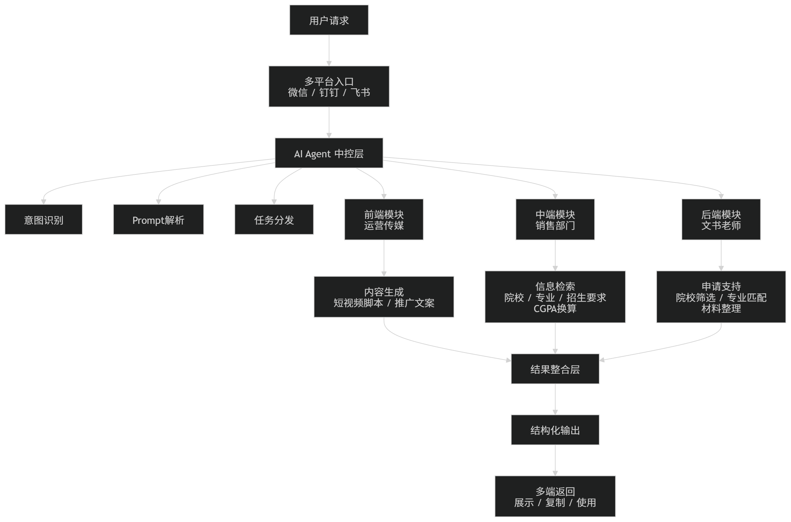

企业级 AI 智能体工作流系统
面向教育企业内部运营、销售与文书团队的 AI 提效工具
公开 Demo
企业内部项目
该项目来源于真实教育咨询业务场景，企业内部版本涉及公司数据、业务流程与内部工具，因此无法公开源码。当前网站展示的是脱敏后的公开 Demo：AI 留学申请工作流平台，用于模拟院校推荐、申请文案生成、GPA 换算等高频业务流程。
- 业务背景：企业内部存在运营传媒、销售部门、文书老师等多角色协同场景，信息查询、内容生成、院校匹配和申请材料处理流程分散。
- 前端场景：面向运营传媒团队，支持销售短视频脚本、推广文案和基础内容素材生成，减少重复撰写成本。
- 中端场景：面向销售部门，支持招生简章、院校信息、申请要求、CGPA 换算与专业推荐查询，提升客户咨询响应速度。
- 后端场景：面向文书老师，辅助完成学生背景信息整理、院校初筛、专业匹配与申请条件核对。
- 公开 Demo：基于 HTML / CSS / JavaScript 开发 AI 留学申请工作流平台，支持院校推荐、申请文案生成与 GPA 换算；通过动态表单、多任务工作流切换、前端规则匹配、结构化结果渲染和历史记录管理，模拟顾问端业务工具的完整使用链路。
- 项目结果：基于典型查询任务耗时对比，销售查询效率提升约 60%，顾问 / 文书团队重复查询工作减少约 70%，累计节省人工查询时间 200+ 小时。
展开脱敏流程图
